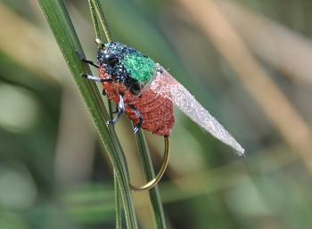
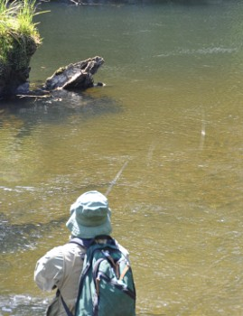
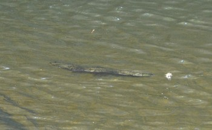
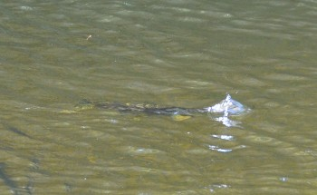
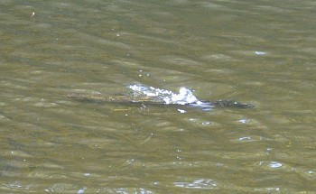
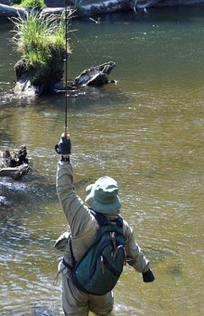

釣行日誌 ＮＺ編 「翡翠、黄金、そして銀塊」
シケーダ
2010/11/24(WED)-3
果てしなく広がる原生林の中、どこまでも川は蛇行している。左岸側を、ひたすらディーンの後を追って歩く。力強いニュージーランダーの歩みは父親譲りかと思われる。ブリントさんも実にたくましい歩き方をする人である。川岸に残されるディーンの足跡について歩こうと試みるが、とうていストライドが追いつかない。
こちら岸に流木の横たわるポイントで、また、ディーンが１尾見つけた。鱒は水面に注意を払っているようなそぶりを見せていたので、今度は鰐部さんがドライで挑む。結んだのは、今回の旅行前に彼が必殺の思いを込めて巻き上げた特製のセミフライである。川縁の高みから見ていると、鱒と釣り人の一挙手一投足が手に取るようにわかって実に面白い。ガイドの目測通りにカツがフライを投射すると、水中の鱒がゆっくり浮上して反転し、流れ去るセミフライを追いながらくわえた。
「ストラーイクッ！」
万全の体勢でタイミングを測ったカツが、どんぴしゃりの合わせを決める。川底は砂地だが、回りには倒木が至るところにあり、その中に逃げ込まれるとやっかいな事になる。カツは見事に鱒をあしらいながら自分に有利にファイトを進めていく。
「ビッグフィッシュ！」
「イヤーァ！」
僕が興奮して叫ぶと、カツは冷静に答える。鱒が走る。しぶきが上がる。頭を下にした鱒が、幾度となく流木の下に潜り込もうと試みる。数分のファイトの後、見事大鱒がディーンのネットに収まった。
「カツのシケーダを見事に喰ったねぇ！」
「ええ！ ばっちり！」
ここで白状するのだが、最初、鰐部さんが巻きためたシケーダを見せてくれた時、『これはちょっと......効かないんじゃないかなぁ.....』と、心中一抹の不安を抱いていたのであった。しかし、そんな伊藤の懸念を見事に吹き飛ばし、ウェストランドのブラウンは迷うことなく食らいついたのである。

そのフライにカツがつぎ込んだ情熱と時間とを想う時、素直に頭が下がるのであった。それにしても自分で巻いた必殺のフライで大物を仕留めた気分は最高だろうなぁと想う。
また遡行が始まり、カーブをいくつか越したあたりで先頭を歩いていたディーンの歩みが止まる。鱒だ。静かにディーンの背後に立ち、肩越しに水面を伺うと、水中から突き出した木の根っこに草が生えている切り株が見えた。その切り株の下にわずかに茶色の影が見えた。大きい。鱒の定位している位置は水面に近く、ドライなら喰いそうである。鰐部さんの例にならって、僕も YouTube を見て覚えて巻いた Clark's Cicada を結んだ。オリジナルではないが、気合いの入れようではこちらも負けてはいない。今回は、キャスティングの位置に立ち込んでも鱒が見えている。慎重に距離を見計らい、キャスト。６番のラインが空気抵抗の大きなセミフライを鱒の鼻先へと運び、水面に波紋が広がる。




フライが水面を漂い出すと、茶色の影はゆっくりと動きだし、浮上し、シケーダに飛沫を上げて食らいついた。１、２、３。ストライク！

釣行日誌ＮＺ編 目次へ
サイトマップ
ホームへ
お問い合わせ